Un circuito eléctrico es un camino cerrado por el que circula la corriente eléctrica. Está formado por varios componentes que permiten el paso de electricidad desde una fuente de energía (como una batería) hasta los dispositivos que la usan (como focos o motores), y luego de regreso a la fuente.
En el mundo actual, donde la tecnología es una parte esencial de nuestras vidas, el mantenimiento de nuestros sistemas informáticos se ha vuelto más crítico que nunca. Ya sea un ordenador personal o una red corporativa, el mantenimiento regular es necesario para mantenerlos funcionando sin problemas y de manera eficiente. Pero, ¿qué es exactamente el mantenimiento informático? Se refiere al proceso de mantener los sistemas informáticos, hardware y software en buen estado de funcionamiento.
Un circuito en serie tiene todos sus componentes conectados uno tras otro en una sola línea. La corriente es la misma en todos los elementos, pero el voltaje se reparte. Si uno se apaga o se daña, todo el circuito deja de funcionar.
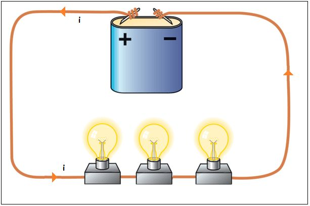1. Una sola trayectoria para la corriente eléctrica.
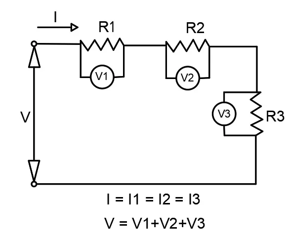2. El voltaje se divide entre los elementos del circuito.
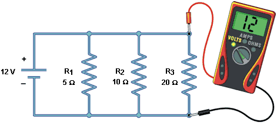3. Si un componente falla, todo el circuito se detiene.
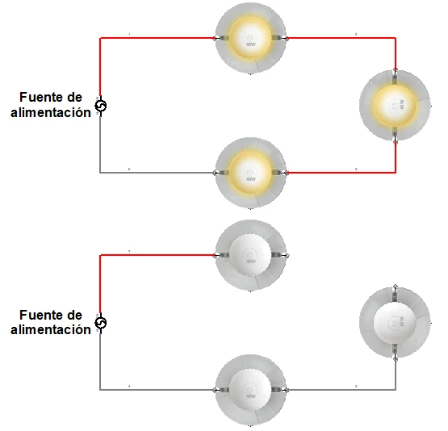4. La resistencia total aumenta al agregar más elementos.
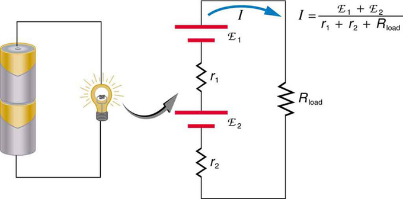5. Fácil de construir, pero poco práctico en aplicaciones grandes.
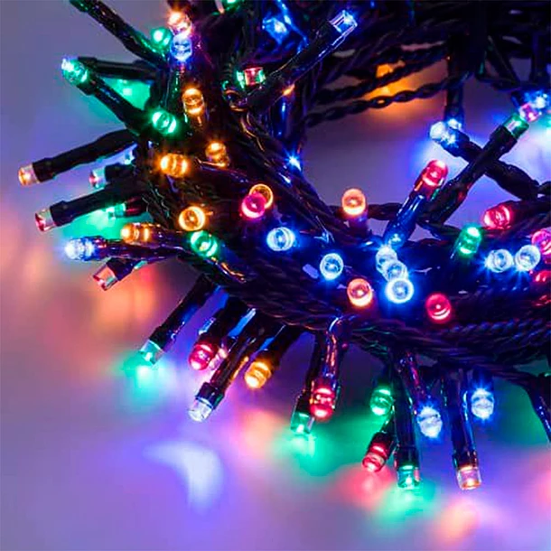En un circuito en paralelo, los componentes están conectados en ramas separadas. Todos reciben el mismo voltaje, pero la corriente se divide entre ellos. Si uno falla, los demás siguen funcionando.
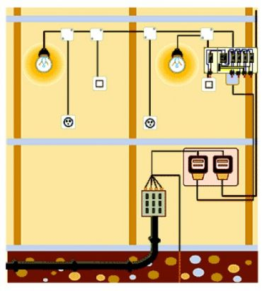1. Múltiples trayectorias para que fluya la corriente.
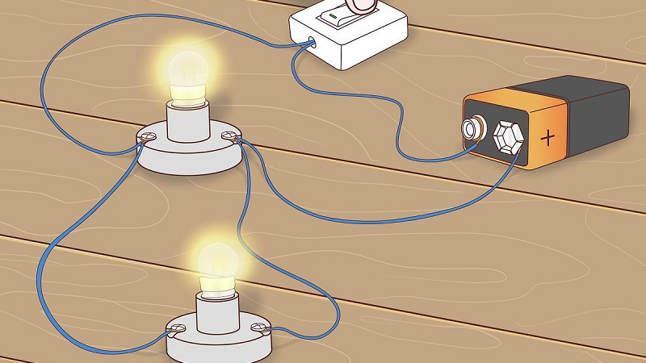2. El voltaje es el mismo en todos los componentes.
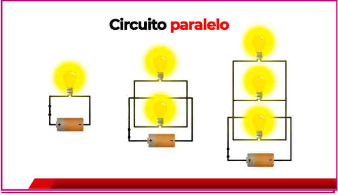3. La corriente se divide entre las diferentes ramas.
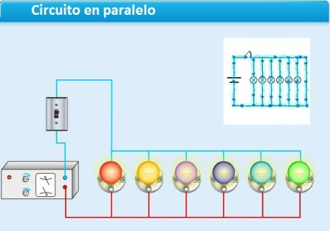4. Si un componente falla, los demás siguen funcionando.
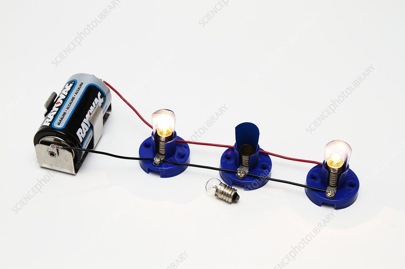5. Requiere más cables, pero es más eficiente y seguro..
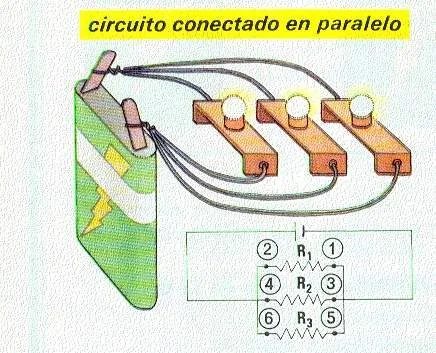El circuito mixto combina conexiones en serie y paralelo. Se usa cuando se necesita que algunas partes dependan entre sí y otras funcionen por separado.
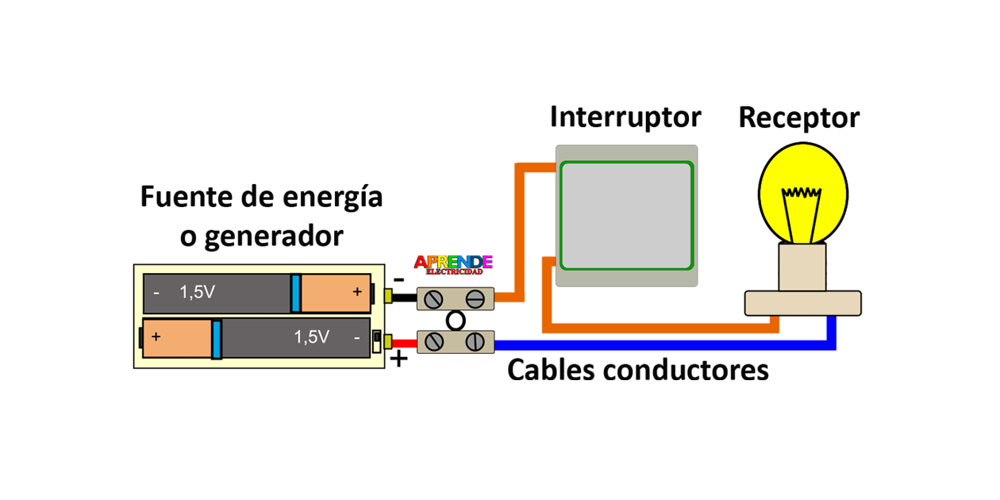1. El voltaje y la corriente varían según cada sección del circuito.
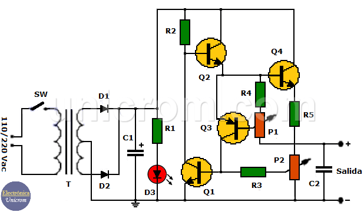2. Más complejo de diseñar y analizar, pero muy útil.
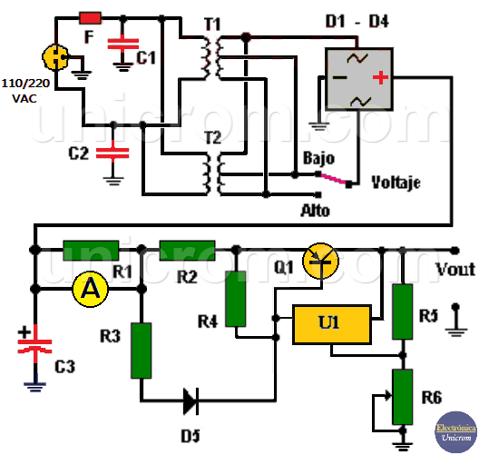3. Muy usado en sistemas reales, como autos, electrodomésticos y tableros eléctricos.
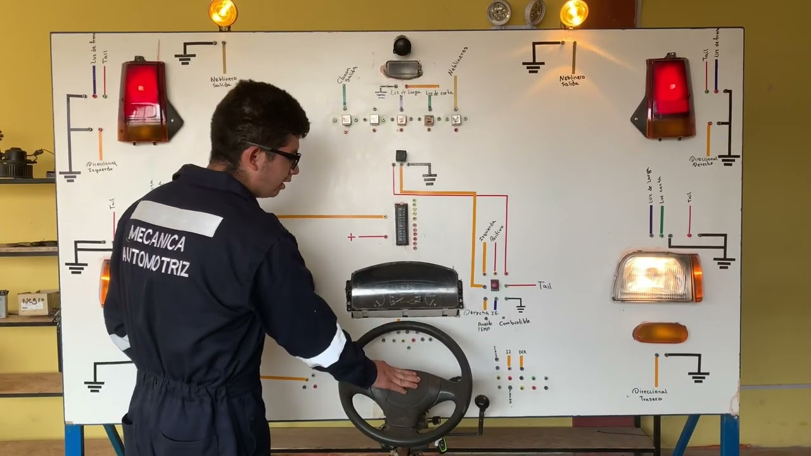4. Si un componente en serie falla, afecta solo su parte del circuito..
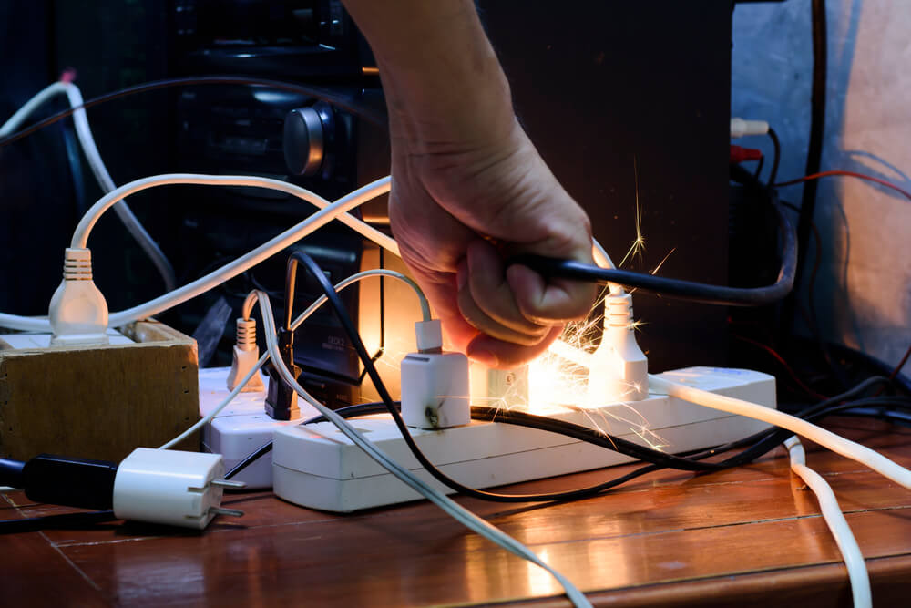¿Tienes problemas con tu conexión? Diagnóstica las fallas aquí.👻